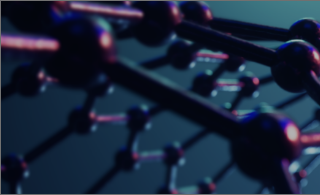
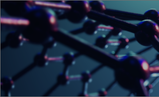

니즈에 대한 철저한 분석을 통한 최고의 제품과 서비스를 제공하고 있습니다

주식회사 포이 화학소재는 촉매를 전문적으로 연구 개발하고 있으며, 높은 수준의 공정 촉매 기술력과
품질관리를 기반으로 고객의 요구사항에 맞춘 촉매 Solution을 제공하고 있습니다.
주식회사 포이 화학소재는 촉매를 전문적으로
개발 생산하고 있으며, 높은 수준의 공정 촉매 기술력과
품질관리를 기반으로 고객의 요구사항에 맞춘
촉매 Solution을 제공하고 있습니다.


원재료
배합단계

혼련
단계
성형
단계
건조
단계
열처리
소성단계
주식회사 포이는 축적된 경험과 노하우가 담긴 원료 입자 가공 기술을 바탕으로
구형 뿐만 아니라 다양한 형태, 크기의 촉매를 제조할 수 있습니다.
주식회사 포이는 축적된 경험과 노하우가 담긴 원료 입자 가공 기술을 바탕으로 구형 뿐만 아니라 다양한 형태, 크기의 촉매를 제조할 수 있습니다.

원료 가공

다양한 형태의 성형

치밀화 및 미세구조 제어(소결)


원료 균일
배합기
Kneader
Mixer
성형
장치
Vacuum
Oven
Furnace
주식회사 포이는 고품질, 고효율, 비용 측면에서 고객에 맞춘 최적화된 촉매 Solution을 제공합니다.


| 구분 | 형태 | 사이즈(mm) |
|---|---|---|
| 1 | 구형 | 직경 : 1 ~ 6 |
| 2 | 펠렛 | 직경 : 2 ~ 5 길이 : 2 ~ 5 |
| 3 | Corrugate | 직경 : 3~ |


유해물질 처리 공정에서는 유해물질 취급자의 안전을 위한 스마트워크가 실현되는 유해물질 공정의 무인화 기술 개발이 요구되고 있으며 주식회사 포이에서는 이러한 필요성에 따라 스마트 기술을 적용한 유해물질 제거 시스템 서비스를 제공하고 있습니다.
유해물질 처리 공정에서는 유해물질 취급자의 안전을 위한
스마트워크가 실현되는 유해물질 공정의 무인화 기술 개발이
요구되고 있으며 주식회사 포이에서는 이러한 필요성에 따라
스마트 기술을 적용한 유해물질 제거 시스템 서비스를
제공하고 있습니다.

스마트 기술이 적용된 유해물질 제거 공정 플랫폼 설계
스마트 기술이 적용된 유해물질
제거 공정 플랫폼 설계

유해물질 주입제어 단계
유해물질
주입제어 단계
지능형 IoT 유량 제어기를 거쳐 현장의 유해물질 노출을 인식합니다.

데이터 현장 수집
데이터
현장 수집
유량 제어기는 반응기 영역까지 접근하는 유해 물질을 데이터를 수집합니다.
데이터 전송
유량 제어기와 반응기에서 수집된 데이터를 스마트 감시 제어 시스템으로 전송합니다.
유해물질 인식 및
실시간 분석
유해물질 인식 및 실시간 분석
스마트 감시 제어시스템으로 전송된 데이터는 분석 시스템으로 전송되어 유해물질 여부를 판단하고 관리 지침을 안내합니다.
실시간 모니터링
및 분석데이터 관리
실시간 모니터링 및 분석데이터 관리
지능형 IoT 유량 제어기를 거쳐 현장의 유해물질 노출을 인식합니다.